вернутся на главнуюУпс! Поворот не туда!
Кажется, ваш вело-маршрут привёл в тупик.
Давайте вернёмся обратно на правильную дорожку.
Упс! Поворот не туда!
Кажется, ваш вело-маршрут привёл в тупик.
Давайте вернёмся обратно на правильную дорожку.